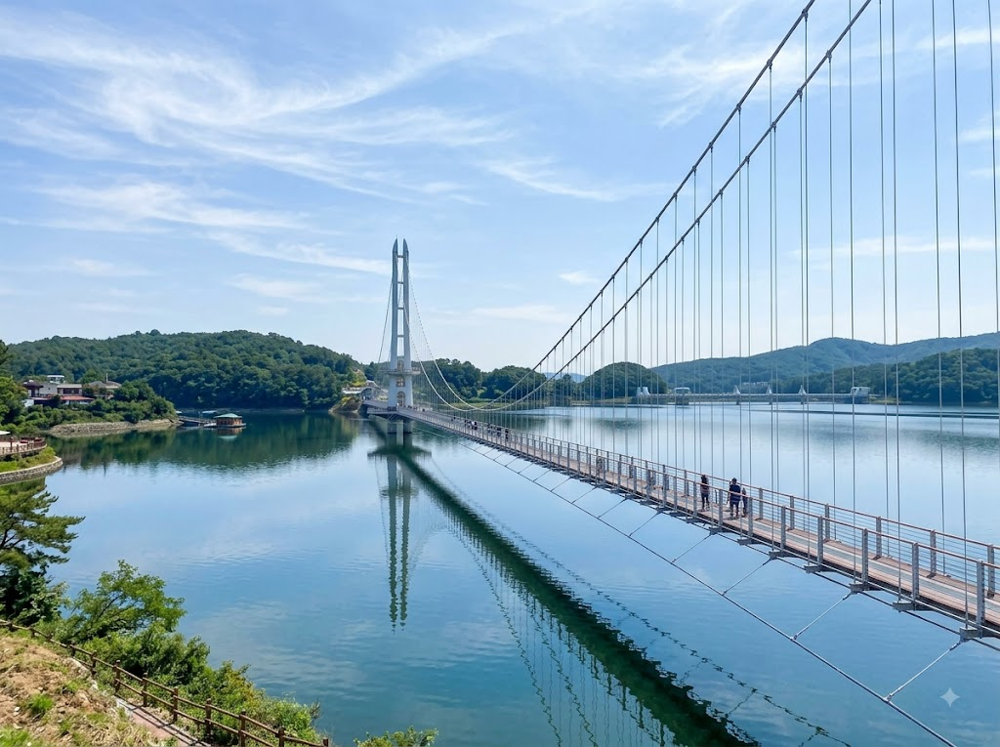
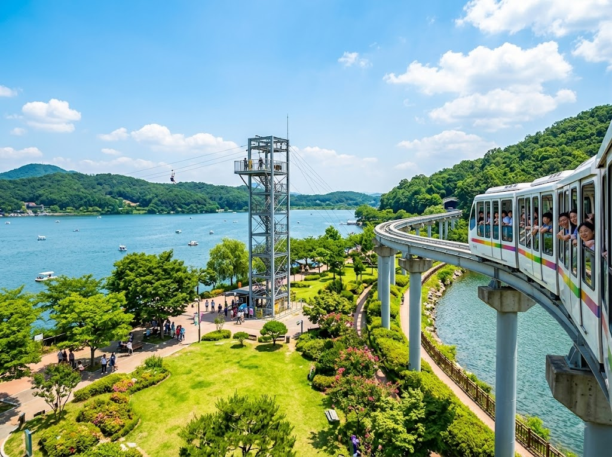
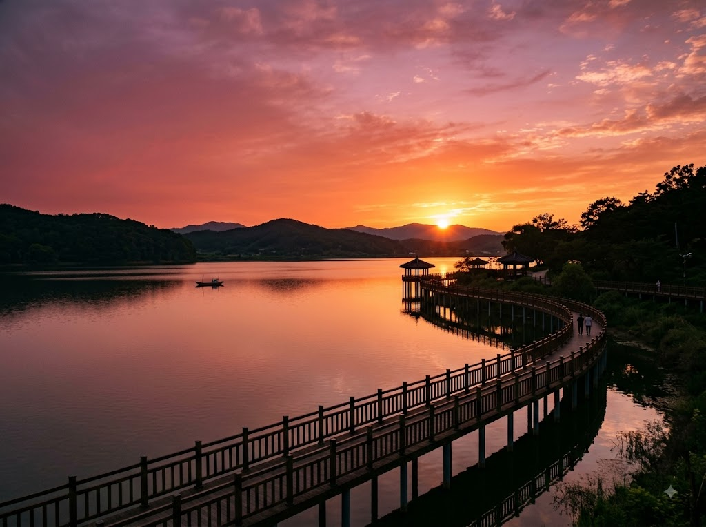

충남 예산의 예당저수지에는 국내 저수지 출렁다리 중 손꼽히는 길이의 현수교가 놓여 있습니다. 출렁다리를 건너고, 호수 위를 달리는 모노레일을 타고, 짚라인으로 짜릿함까지 더하면 반나절이 훌쩍 지나갑니다. 8월 말~9월 늦여름 충남 나들이 코스로 적극 추천합니다.

예당호 출렁다리는 충남 예산군 예산읍 예당저수지 위에 설치된 현수교입니다. 총 길이 약 402m로, 저수지 출렁다리 중 상당히 긴 편에 속합니다. 다리 아래로는 예당저수지 수면이 내려다보이며, 폭이 1.5m로 두 사람이 나란히 걸을 수 있는 구조입니다.
다리 중간에 서면 바람에 따라 출렁임이 느껴집니다. 고소 공포증이 있거나 어린이를 동반한 경우에는 난간을 잡고 천천히 건너는 것이 좋습니다. 다리 하부는 격자형 구조물로 되어 있어 발아래 수면이 훤히 보이는데, 이 부분에서 아찔함을 호소하는 방문객이 적지 않습니다.
출렁다리 입장료는 무료이며, 주변 주차장도 무료로 운영됩니다. 다만 모노레일과 짚라인은 별도 요금이 발생합니다. 운영 시간은 계절에 따라 다르며, 야간에는 LED 조명이 켜져 야경 명소로도 인기를 끌고 있습니다.
출렁다리와 함께 예당호 관광단지의 핵심 어트랙션이 바로 예당호 모노레일입니다. 예당저수지 둑길을 따라 설치된 레일 위를 소형 열차가 운행하며, 호수를 바라보며 앉아서 이동하는 느낌이 색다릅니다.
모노레일은 주말과 공휴일에 운행 횟수가 늘어나며, 줄이 길어지는 시간대는 오전 11시~오후 2시입니다. 탑승 전 대기 시간을 단축하려면 오전 10시 이전이나 오후 3시 이후 방문을 추천합니다.
모노레일 노선은 편도로 이동 후 반환점에서 잠시 머물다 돌아오는 왕복 구조입니다. 전체 탑승 시간은 약 10~15분이며, 반환점 전망 포인트에서 예당저수지 전경을 감상하고 사진을 찍을 수 있습니다. 어린이 동반 가족에게 특히 인기가 높습니다.
예당호 짚라인은 예당저수지 한쪽 언덕에서 출발해 수면 위를 가로지르는 체험형 어트랙션입니다. 짚라인 특성상 높이에서 바라보는 저수지 뷰가 일품이며, 속도감도 상당합니다.
이용 조건은 안전을 위해 신장과 체중 기준이 있습니다. 현장 안내 게시물을 반드시 확인하시고, 심장 질환·고혈압·임신 중인 경우 탑승을 자제해야 합니다. 운동화 착용이 필수이며, 슬리퍼나 굽 있는 신발은 탑승이 불가합니다.
짚라인 탑승 대기 시간은 주말 오전~오후에 30분~1시간이 될 수 있습니다. 미리 온라인 예약이 가능한 경우 예약 후 방문하는 편이 편리합니다(예산군 관광사이트 또는 현장 부스에서 확인).

예당관광단지는 출렁다리·모노레일·짚라인 외에도 다양한 시설을 갖추고 있어 반나절~하루 코스로 알찹니다.
여유 있게 모두 돌아보려면 오전에 출발해 오후 늦게 귀가하는 일정이 좋습니다. 출렁다리·모노레일·짚라인을 먼저 즐기고, 점심 식사 후 황새공원과 수변공원 산책으로 마무리하는 코스가 일반적입니다.
예당관광지 인근에는 저수지 뷰를 보며 식사할 수 있는 식당들이 있습니다. 충남 예산은 예산 사과와 예산 황새 쌀이 유명하며, 지역 특산물을 활용한 음식을 맛볼 수 있습니다.
민물 매운탕은 저수지 인근 식당의 주력 메뉴입니다. 예당저수지에서 잡은 민물고기를 활용한 매운탕과 매운조림은 지역 방문자들이 즐겨 찾는 음식입니다. 여름철에는 저수지 바람을 맞으며 야외 좌석에서 식사하는 것도 운치 있습니다.
예산군 시내(예산읍)로 나가면 더 다양한 식당과 카페가 있습니다. 예산 사과를 활용한 애플파이·사과주스와 예산 지역 삼겹살도 인근에서 즐길 수 있습니다.
자가용 이용 시: 서울에서 출발하면 서해안고속도로 → 당진영덕고속도로 예산홍성IC 또는 경부고속도로 → 천안논산고속도로 → 논산IC 방향 경유 후 예산으로 진입하는 방법이 있습니다. 서울에서 약 1시간 30분~2시간 소요됩니다.
예당관광단지에는 대형 무료 주차장이 마련되어 있으며, 주말에도 비교적 여유롭게 주차할 수 있는 편입니다. 다만 이효석문화제나 예산 지역 축제 기간과 겹치는 날에는 혼잡할 수 있습니다.
대중교통 이용 시: 예산시외버스터미널에서 예당관광단지까지 택시로 약 10분 거리입니다. 서울 남부터미널 또는 센트럴시티에서 예산행 버스가 운행됩니다. 배차 간격이 있으므로 사전에 시간표를 확인해 두세요.
| 이동 수단 | 출발지 | 소요 시간 | 비고 |
|---|---|---|---|
| 자가용 | 서울(강남) | 약 1시간 40분 | 당진영덕고속도로 예산홍성IC |
| 시외버스 | 센트럴시티 | 약 1시간 30분 | 예산터미널 하차 후 택시 10분 |
| 기차+택시 | 서울역→온양온천역 | 약 1시간 20분+택시 25분 | 무궁화 이용 |
예산은 인근 홍성·아산·당진과 묶어 충남 서부 일대를 도는 코스로 즐기기 좋습니다.
예산 수덕사: 예당호에서 차로 20분 거리. 백제 시대 창건된 고찰로 대웅전이 국보로 지정된 유서 깊은 사찰입니다. 덕숭산 단풍(10월)과 함께 방문하면 더욱 아름답습니다.
아산 외암민속마을: 예산에서 차로 약 30분 거리. 충청도 전통 민가가 보존된 민속마을로, 초가집과 고택을 직접 둘러볼 수 있습니다.
홍성 남당항: 예산에서 서쪽으로 약 40분 거리. 새조개와 대하가 유명한 항구로, 10월~11월이 제철입니다. 늦여름에는 꽃게가 주력 메뉴입니다.
예당호는 충남 최대 규모 저수지 중 하나로, 수면이 넓어 바람이 강한 날이 많습니다. 출렁다리 위에서 바람이 세면 다리 흔들림이 심해질 수 있으므로, 바람이 강한 날(특히 태풍 영향권)에는 출렁다리 통행이 제한될 수 있습니다. 방문 전 날씨 예보를 확인하세요.
여름철에는 오전 11시~오후 2시 사이 자외선과 더위가 가장 강합니다. 이 시간대에는 그늘진 수변공원 벤치나 식당에서 점심 식사를 하며 더위를 피하고, 오후 3~4시부터 다시 야외 활동을 시작하는 방식이 현명합니다. 모자·선크림·물병은 필수입니다.
